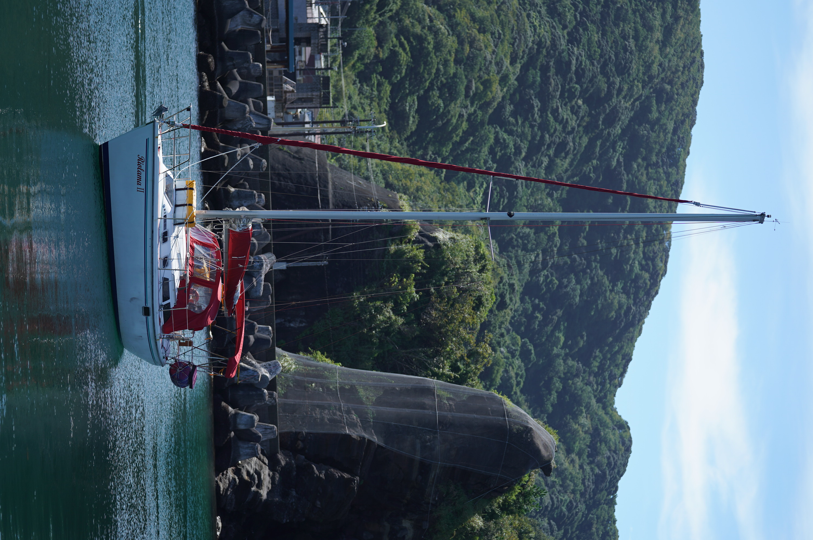

About RIOLAMA II
RIOLAMA II is a 30-foot Japanese-registered sailing yacht, currently cruising through Southeast Asia.
She is not a large or luxurious yacht, but she has carried me safely across many waters and through many memorable anchorages.

About Me
My name is Toru Hanzawa, a Japanese cruising sailor.
I departed Japan in 2022 aboard RIOLAMA II and have been cruising throughout Southeast Asia ever since.
My cruising style is simple and safety-first. I enjoy moving at my own pace, meeting people, experiencing different cultures, and continuing the journey rather than rushing toward a destination.
Current Voyage
After departing Japan, I have sailed through the Philippines, Malaysia, and Indonesia. I am now preparing for the next stage of the voyage toward Malaysia and Thailand.
Sailing with Others
I usually sail solo, but from time to time I welcome the opportunity to sail with like-minded people who enjoy a relaxed, respectful, and safety-conscious cruising style.
Contact
Toru Hanzawa
S/Y RIOLAMA II
Email:
hanzawa@digilog.co.jp